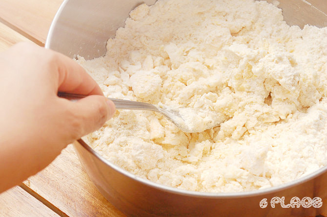
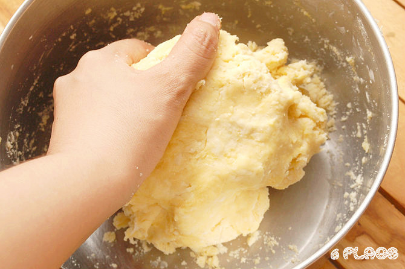
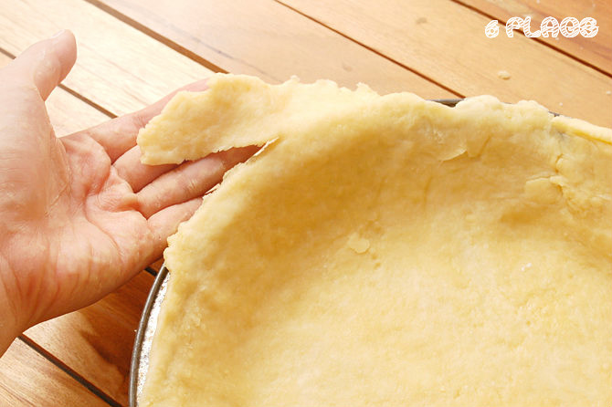
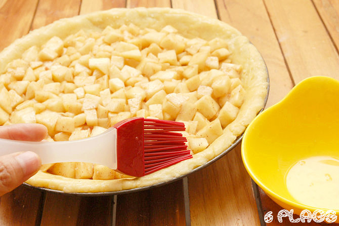
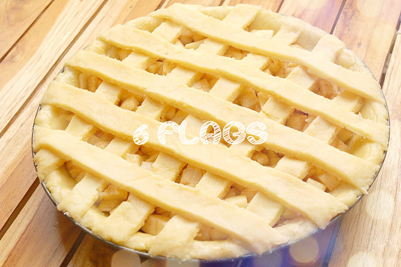

수상 경력이 있는 미국식 애플 파이 레시피
따뜻하고 갓 구워진 홈메이드 애플 파이처럼 미국적인 음식은 없을겁니다. 미국이란 나라가 세워지기도 전에 사람들은 애플 파이를 굽기 시작했습니다. 1500년도에 필그림들이 애플 파이를 미대륙에 정착시켰습니다. 그 이후로 애플 파이는 미국 문화를 대표하는 아이콘이 되었습니다. 가게에서 산 애플 파이는 홈메이드 애플 파이를 이길 수 없습니다. 애플 파이를 처음부터 만들기는 쉽지 않지만, 그 가치가 있습니다. 일단 겹겹의 버터로 만들어진 크러스트를 굽습니다. 그리고 신선한 타르트 사과와 시나몬 그리고 너트맥과 시나몬으로 풍미를 더합니다. 마지막으로 크러스트를 겹쳐서 격자 모양의 파이로 만듭니다. 이 레시피는 미국 카운티 축제에서 여러번 1등을 수상했습니다. 이 레시피를 따라주시면 아주 맛있는 홈메이드 애플 파이를 만드는 것이 식은죽 먹기라는 것을 알게될 것입니다!

크러스트 재료
- 밀가루 두 컵
- 소금 한 티스푼
- 버터 4분의 3 스틱
- 5 테이블 스푼의 차가운 물
- 계란 한개와 우유(파이를 황금빛으로 코팅하기 위한 브러시용)
파이 속 재료
- 설탕 3분의 1컵
- 브라운 슈거 3분의 1컵
- 소금 4분의 1티스푼
- 시나몬 한 티스푼
- 너트맥 2분의 1티스푼
- 밀가루 3테이블스푼
- 중간 크기의 사과 6~8 개(Granny Smiths는 타르트 파이 그리고 Golden Delicious는 달콤한 파이를 만듭니다.)
Mama의 레시피 최고의 초콜렛 칩 쿠키
- 오븐을 400도로 예열하세요.
- 반죽을 밀어서 필 수 있는 깨끗하고 넓은 카운터를 사용할 수 있도록 준비하세요.

- 큰 볼에 밀가루, 소금 그리고 버터를 넣으세요. 패스트리 블렌더나 포크를 이용해서 버터가 밀가루와 함께 공처럼 뭉쳐질 때까지 부숴주세요. 천천히 물을 넣어주세요.

- 반죽이 큰 공모양이 될 때까지 밀가루를 묻힌 손으로 반죽해주세요. 공모양의 반죽을 반으로 나눈 후 랩으로 싸주세요. 랩으로 싼 반죽을 냉장고에 보관합니다. 두 반죽을 랩으로 싼 후 다음 단계로 넘어가기 전에 30 분간 냉장고에 보관해주세요.

- 밀가루를 묻힌 카운터 탑에 파이 팬의 직경보다 5.1센치 가량 큰 원 모양으로 반죽을 만들어주세요. 반죽을 밀 때 밀방망이에 달라붙지 않도록 반죽 위에 랩을 겹쳐놓는 것을 선호하는 사람들도 있습니다.

- 밀방망이에 완전히 감싸지도록 만들어서 납작해진 반죽을 카운터 탑에서 천천히 들어올립니다.

- 팬 위에 반죽을 떼어 놓고 찢어지지 않게 조심합니다. 팬에 맞추어 올려 놓고 옆부분을 눌러줍니다.

- 팬 주위를 벗어난 반죽은 잘라줍니다. 0.6cm 가량의 반죽 여분을 파이 팬에 남겨둡니다.

- 파이 껍데기를 냉장고에 보관합니다.

- 파이 속을 만듭니다. 사과는 껍질을 벗긴 후 8등분 하여 약 2.5센치 정도 두깨로 자르거나 약 1.2센치 정육면체로 자릅니다. 큰 볼에 사과를 넣고 설탕(백설탕과 흑설탕 둘 다 가능), 소금, 레몬 주스, 밀가루, 너트멕 그리고 시나몬과 함께 완벽히 섞어줍니다. 그리고 냉장고에 보관해둡니다.

- 그리고 이 전에 했던 방법과 같이 밀가루를 묻힌 후 남은 반죽을 밀대로 밀어줍니다. 파이의 윗 부분: 반으로 살짝 접은 후 10cm 정도로 접은 부위를 자른 후 접은 부위의 중심부를 4 등분으로 자릅니다. 이렇게 하면 파이의 속이 옆으로 튀어나가지 않고 여유가 있습니다. 파이의 윗 껍질을 펼쳐주세요. 격자모양 껍질: 반죽을 2.5cm 정도의 넓이로 최대한 많이 길게 잘라주세요.

- 냉장고에서 파이 껍질과 속을 꺼내세요.

- 파이 껍질에 파이 속을 넣고 숟가락 뒷 면으로 펼쳐주세요. 팬 전체에 다 채울 수 있을 정도로 양이 충분할 것이며 중심부에서 최소 약 2.5cm 위로 쌓을 수 있습니다.

- 푼 달걀로 파이 껍질의 겉을 브러시로 발라줍니다.

- 파이 위에 껍질을 올려줍니다. 잘라진 껍질:파이 속 위에 잘라진 껍질을 올려줍니다. 버터 나이프로 가장자리 반죽을 잘라줍니다. 두 엄지 손가락을 마주한 후 가장자리에 대주세요. 엄지 손가락을 내리고 서로 마주보게 하세요. 엄지 손가락으로 파이 반죽을 꾹꾹 눌러주세요. 격자 모양 껍질: 패스트리 조각을 사과 위에 십자 모양으로 겹쳐 놓고, 격자 모양을 만들기 위해 서로 엮어줍니다. 이전에 설명한 방식대로 가장자리의 패스트리는 자른 후 밑으로 눌러줍니다.

- 격자 모양 껍질 위를 계란 세척기를 이용해 우유를 뿌려줍니다. 겉이 밤색으로 변하도록 도와줄 것입니다. 마지막으로 파이의 겉을 시나몬과 설탕을 흩뿌려주세요.

- 200도에서 15 분간 구워주세요. 그리고 45 분 동안 190도로 온도를 내려줍니다. 겉이 황금빛 밤색으로 변하면 꺼내주세요.

- 애플 파이를 대접하기 전에 45 분에서 1시간 가량 식혀주세요.

- 완성 되었습니다! 아름다운 홈메이드 애플 파이!